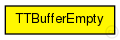

This documentation is released under the Creative Commons license
This documentation is released under the Creative Commons licenseThe message is sent by an empty TTBuffer instead of a time-triggered message, to inform the outgoing port that the reserved bandwidth may be used by other frames.
See also: TTQueueBuffer, TTBuffer,
Author: Till Steinbach
The following diagram shows usage relationships between types. Unresolved types are missing from the diagram. Click here to see the full picture.
The following diagram shows inheritance relationships for this type. Unresolved types are missing from the diagram. Click here to see the full picture.
// // The message is sent by an empty TTBuffer instead of a time-triggered message, to inform // the outgoing port that the reserved bandwidth may be used by other frames. // // @see TTQueueBuffer, TTBuffer, // // @author Till Steinbach message TTBufferEmpty { }
This documentation is released under the Creative Commons license